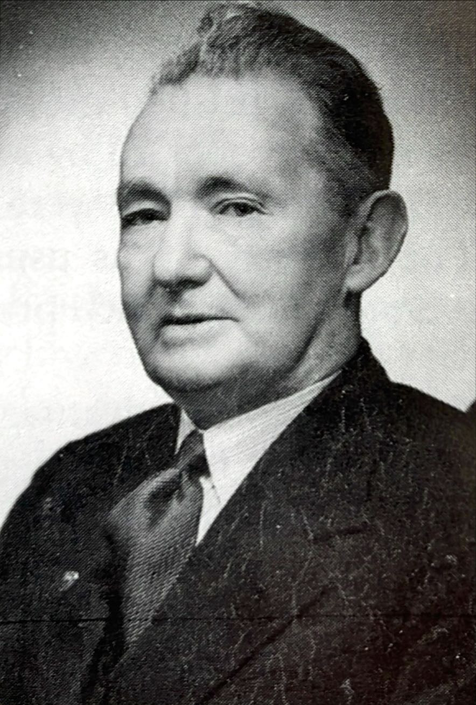
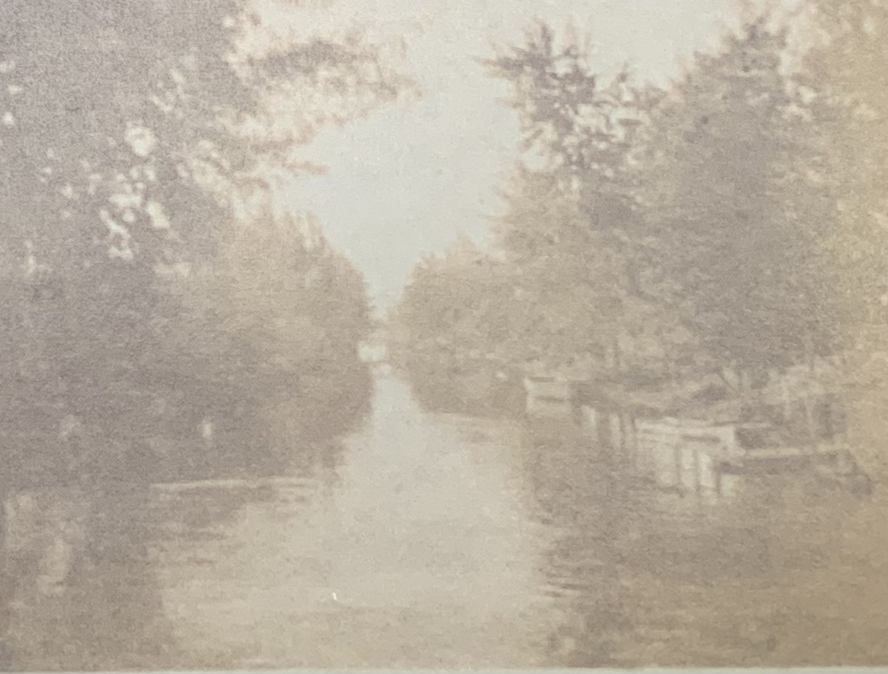
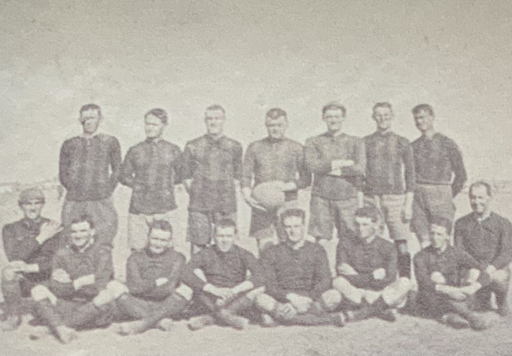
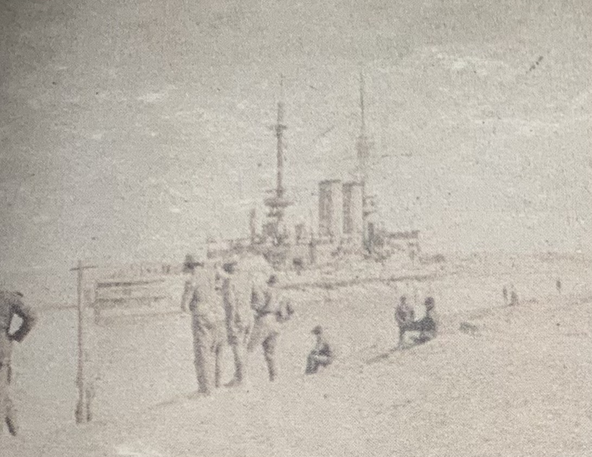
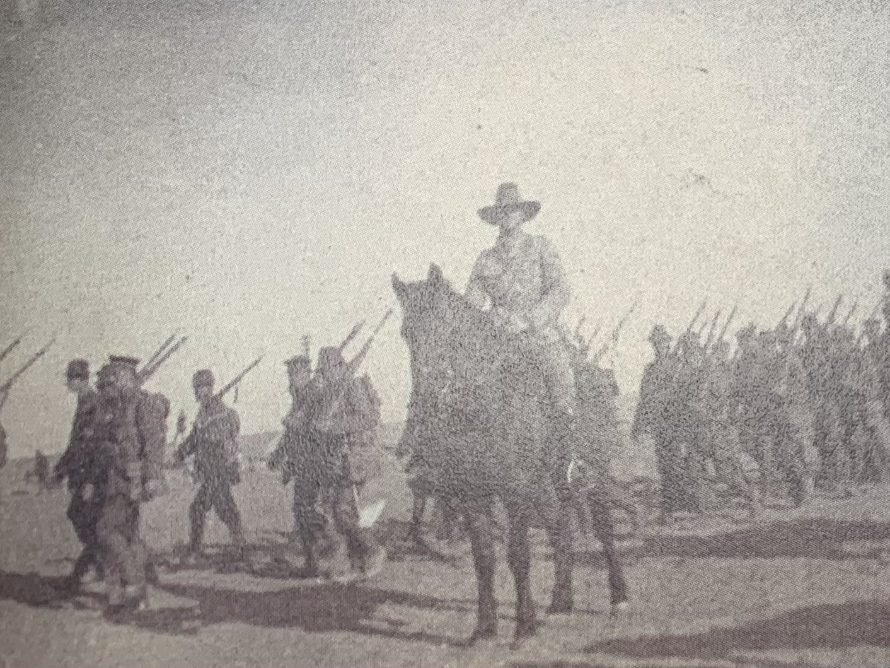
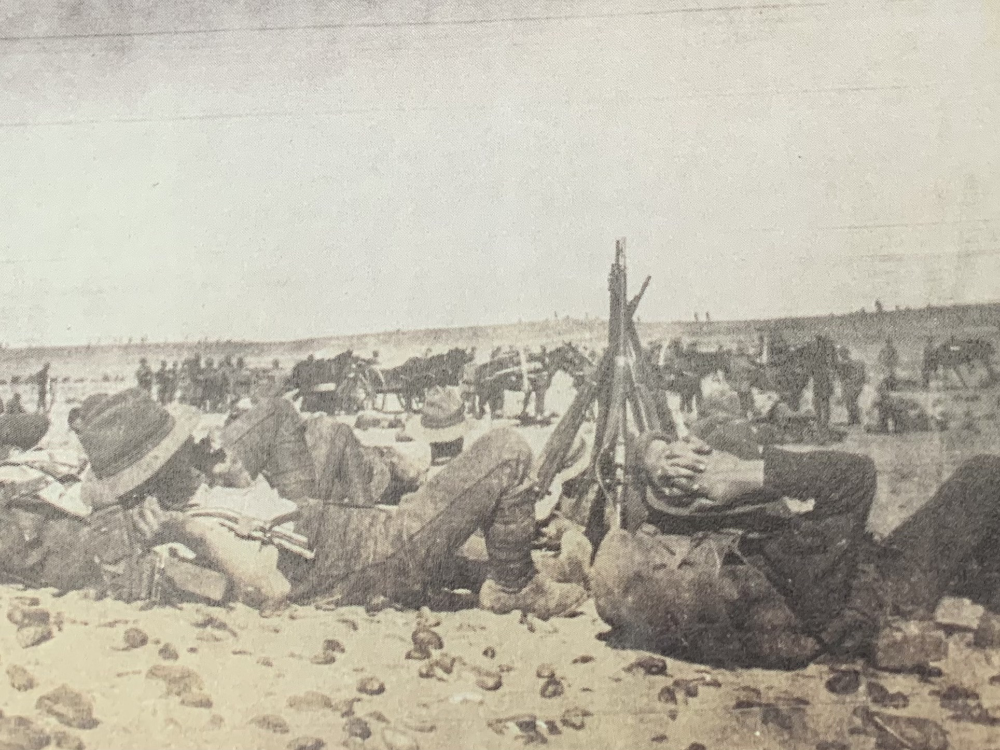

The History of Papanui High School
Featuring a brief look into the Mcbride photo album
Founding and Early History
Originally founded as Papanui Technical College, the school was renamed in 1949 to Papanui High School under the leadership of the then principal, Joseph Mcbride.

Before taking on the role of Papanui High's first principal...
Mcbride, aged 21 at the time, signed up for duty with the Auckland Infantry Battalion. Below are some real photos he took during his Gallipoli tour throughout basic training.





Later Years
After his service to his country and school, a commerative plaque was established in his honor.